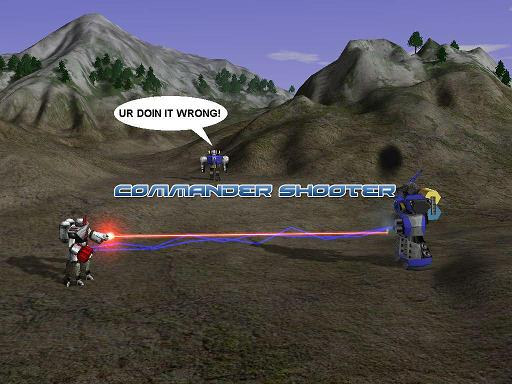

Commander Shooter

|
This page contains outdated information, but is kept for historical reasons. |
{kind=link}
About
Commander Shooter(CS) is a mod where players control one fast commander, and in FPS Camera Mode try to dgun the enemy commander. To FPS, press the c button. You cannot build unless you are Rhyoss. Newest version available v0.45 can be downloaded Here!.
Quotes
Maelstrom -- "Come play with us, it's a fun mod. Playing with yourself just isnt as fun..."
AcMister -- "Why is this mod so popular?.....Holy ****!@!"
[Nem]The_Big_Boss -- "This game is about a commander who shoots stuff."
Noraus -- "I can quote myself?"
[EE]Shadowsage "No! My heart belongs to me!"
Crappage -- "STFU!@!"
DeltaEnergy -- "I played this mod once and I suck."
KingRaptor -- "buff phire noox plz"
Yoda -- "Use the Dgun, Luke"
Anonymous(To keep his identity safe) -- "I like to self destruct killing everybody at once while not shooting a single shot ROAOR!!"
Neddiedrow -- "I almost moved it to the gimmick mod section, but for some reason, it has too many hardcore fans."
History
It was created during summer break by a very bored kid named Noruas. He wanted to include with the new version of AA, but Caydr's mouse, was. erm lagging. It was really made out of curiosity if the idea was plausible but Caydr thought it was blasphemy. At the same time of Caydr's lagging mouse, Timberwolf Mod was being planned to be released with Caydr's new AA versions with Community Mod Pack v1 included, that day would never come. (I think i didn't Atleast I never heard of it.) I have a new theory that Caydr hates commander shooter because every time i ask him to include it in AA, he rejects >_> <_<
It is the first FPS mod for spring, and many new FPS only mods are now following. However because of popularity, Commander Shooter is now the first and so far only FPS mod thats not in the Gimmick Mod section. Some people think Commander Shooter has copied Duel . However it has been proven that Duel and Commander Shooter has nothing to do with each other!
King of Commander Shooter
King_of_CS is the person the best skilled at any commander he chooses to defeat his foes. Kings of CS are highly skilled and should be respected. They must have a tag in front of their name that looks like this [KoCS].The current king is Noruas the Newb Slaying Commander. As of November 23th, 2006.
Strategy
All:
The Commanders all have a close range weapon when not in first person, they auto hit, and do very low damage, and can fire from a range of 500. All commanders have 8000 eyesight and radar! Self Destruct takes 10 seconds on all commanders, however it doubles the explosion's power and this is really good on low gravity maps, although the players may never fall down. Make sure you press C and get into your commander, ctrl 1 groups the commander, so when you fps, you turn on/off, and even cloak! Commanders now have dynamic walking sounds, yes, you can tell how close the enemy commander is by the volume of his steps!
These are how newbs play! Notice how they aren't moving, nor firing dgun, this is how you get owned! 
{kind=link}
United Earth Federation's Supreme Commander:
This guy is the heaviest commander and can pack a wallet full of quarters in seconds. He is slow, heavy and perhaps most newb friendly. If your this guy, make sure nothing slows you down, gun it down with rapid fire style weapons!
ARM:
The arm commander has a slow firing, powerful dgun. Be sure to fire carefully! The Arm commander's on/off function controls the radar jammer. Leaving it on drains power, so if you are running low turn it off. If you are lucky, you can fling the enemy high up in the sky.
Guardian of Kadesh:
This commander has laser pistols ready for battle. However you do not want to use them if you have a precise aim d gun head weapon that destroys all! He is fairly well armored, but his special ability is his self recovery speed. No matter what the damage is, he can recover at dangerous speeds. If you see this commander, kill him while you can!
CORE:
The core commander has a burst firing dgun. He can fire long bursts of dgun. The core commander doesn't have a radar jammer but he is faster than the arm commander. With lag, the core commander can be hard to use, because you need to hit the enemy with all or most the dgun to be effective because it isn't as powerful. If he does manage to hit the target with all of his bursts, he does 50% more damage then the arm commander's weapon.
THE LOST LEGACY:
The TLL commander is big, slow, and has a powerful weapon. He auto fires lightning, huge, and is hard to kill. Very defensive indeed! Do not underestimate one! He has the highest health regeneration, and can take a considerable amount of damage. His gun does the highest amount of damage per second, however it is a slow moving electric type dgun. He cannot be tossed as easily as other commanders can.
Rhyoss:
He's extremely well fit for battle, he has a long range laser by 50%. He also has the fastest moving rocket dgun, that has a huge area of effect. He does not have a radar, but instead has a seismic detector. His repairing is highly effective and suggestive on team battles, he can also build LLT turrets, Giant walls and Radar to detect cloakers. He is the only commander that go walk on water, making him the only amphibious commander!
Talon:
He's fast, he's quick, if you got lag you ain't gonna hit him, the fastest dude in the mod, can run circles and fire d guns faster turn. He does not have good climbing but on flat maps he is perfect for pulling off matrix. Once gone into fps mode, you cannot use laser anymore. His cloak is extremely cheap and gives him the great advantage as an escape artist.
Magma:
He's slow, made of dough, falls to pieces and his d gun doesn't do very well. He is stealthy, and has a powerful shield that can block 10,000 dmg of all sort of cruel dguns, snipes and assaults from core. He has a auto fire rocket, that follows the target and can do a good push to smaller commanders.
Mynn:
Hes slow, very weak, and is reload time is 25 seconds. OK, that sucks right? Nope, because he can climb anything! And His Dgun can kill almost anything! He is the ultimate nuke launcher, and carries a powerful rocket to aid him in his missings! He does not have radar or cloak, so you have to be careful that an arm commander or talon commander is stalking you!
WTF:
He is a model of all commanders smashed into one, and his stats are rounded up. His abilities are such as building llts, firing a good ole double blasting dgun. This commander, is well, i dunno. Just be careful of the second dgun thing after the first one.!
Argon:
He is the commander of one of the first races ever made for total annihilation. He the ability make puppet commanders who can fight and damage a commander. His Clones are more powerful then the actual commander himself, so its advised to hide your commander well before sending the puppet out. He can completely hide by cloaking.
KROGOTH VS COMMANDERS YAY! YAY!
Krogoth:
He's Huge! He roars, and whistles! He even plays music? Oh well, this guy is one can short of a six-pack, that alien. With a huge amount of hp and size, he makes the biggest of commanders look like rag dolls. Not one commander can survive alone. It is recommended for every krogoth, 4 people fight it. He can fire over map features with eye gun and blast his way through with his arm cannons. He does have short range radar, and getting close to him is suicide. The only way to beat a Krogoth is not going head on! His auto repair makes him impossible to beat with several commanders alone!
{kind=link}
4 vs 1 Why:
I will tell you why, for one, krogoth does 4 times as much dmg as the lost legacy commander, 6 times health, 50% slower, and that's not even including the one-shot k.o. attack.
HEY GUYS LET'S ALL BE KROGOTHS!:
That's retarded, Krogoths fighting each other is not cool at all, they all stand there barely moving barely killing each other! This is not the commander shooter way to fun! Its like watching 2 overweight men blobbing each other, SICK.
King of CS vs Krogoth!:
No one is that good, sorry! It's not like knights slaying dragons here.
PEEWEES VS. AKS SUCK! WHY DID YOU INCLUDE IT!
It shows a variant that does not use dgun in fps mode, that ai does not use to auto target at all, unless ai is programed to do so! Also it is to show an example of variants you can make for com shooter!